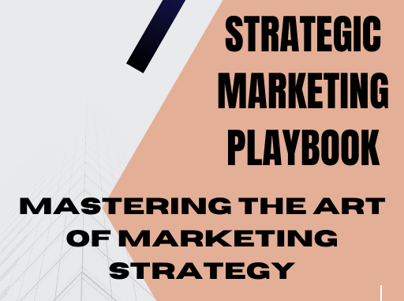

Ebooks
Strategic Marketing Playbook: Mastering the Art of Marketing Strategy
Unlock the secrets to crafting a winning marketing strategy with the "Strategic Marketing Playbook." This comprehensive PDF guide is designed for entrepreneurs, marketers, and business professionals who seek to elevate their marketing efforts and achieve measurable results. With actionable insights, real-world examples, and expert advice, this playbook covers everything you need to know about developing, implementing, and optimizing effective marketing strategies.
Why Purchase Strategic Marketing Playbook?
1. Comprehensive Coverage:
- This playbook provides an in-depth exploration of all essential components of marketing strategy, from market research and target audience identification to digital marketing and analytics.
2. Expert Insights:
- Learn from industry experts who share proven strategies and tactics that have led to successful marketing campaigns across various industries.
3. Actionable Strategies:
- Each section is packed with practical steps, tools, and templates that you can immediately apply to your business to drive growth and improve ROI.
4. Tailored for Success:
- Whether you're a startup founder, a small business owner, or a marketing professional, this playbook is designed to help you develop customized strategies that fit your unique business goals and challenges
5. Stay Ahead of the Competition
- Gain a competitive edge by understanding the latest market trends, consumer behaviors, and innovative marketing techniques.
What You Will Get When You Buy the Playbook
1. In-Depth Chapters:
- Detailed chapters covering critical topics such as market research, target audience segmentation, unique value proposition development, branding, and the marketing mix (4 Ps).
2. Digital Marketing Strategies:
- Insights on leveraging digital channels including social media, email marketing, content marketing, SEO, and PPC to reach and engage your audience effectively.
3. Customer Relationship Management (CRM):
- Techniques for building and maintaining strong customer relationships to foster loyalty and encourage repeat business.
4. Content Marketing:
- Guidance on creating and sharing valuable content that attracts, engages, and converts prospects into customers.
5. Analytics and Metrics:
- Tools and frameworks for tracking and analyzing your marketing performance using key performance indicators (KPIs) to measure success and inform future strategies.
6. Budgeting and Resource Allocation:
- Strategies for allocating financial and human resources efficiently to maximize the impact and ROI of your marketing activities.
7. Adaptability and Flexibility:
- Tips on how to remain adaptable and flexible in your marketing approach to quickly respond to market feedback and changing conditions.
8. Integrated Marketing Communications (IMC):
- Guidance on ensuring all your marketing communications are consistent, cohesive, and reinforce the brand message across all channels and touchpoints.
9. Real-World Examples and Case Studies:
- Learn from successful businesses and campaigns to understand how to apply best practices in real-world scenarios.
10. Templates and Tools:
- Access to ready-to-use templates, worksheets, and tools to streamline your marketing planning and execution processes.
Conclusion
Invest in the "Strategic Marketing Playbook: Mastering the Art of Marketing Strategy" to transform your marketing efforts and achieve your business objectives. With comprehensive content, actionable strategies, and expert insights, this playbook is your ultimate guide to mastering the art of marketing strategy.
